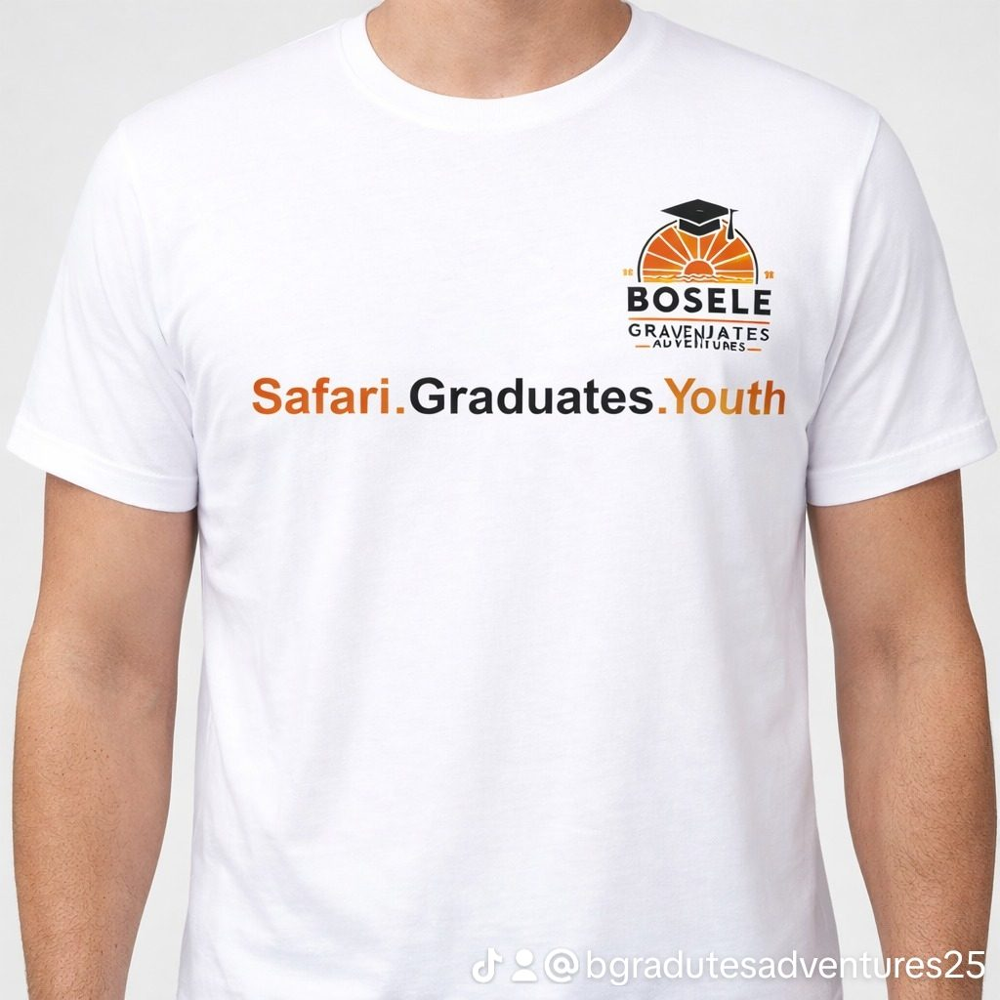
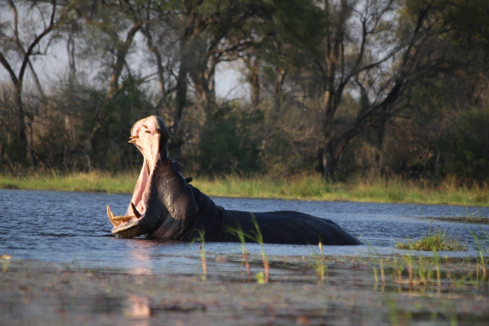
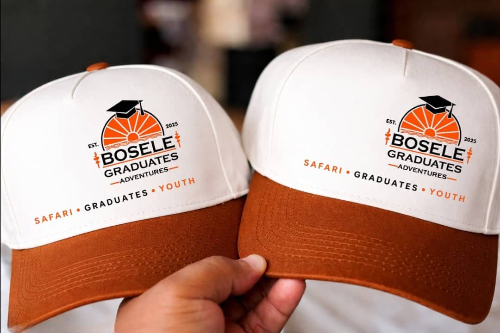
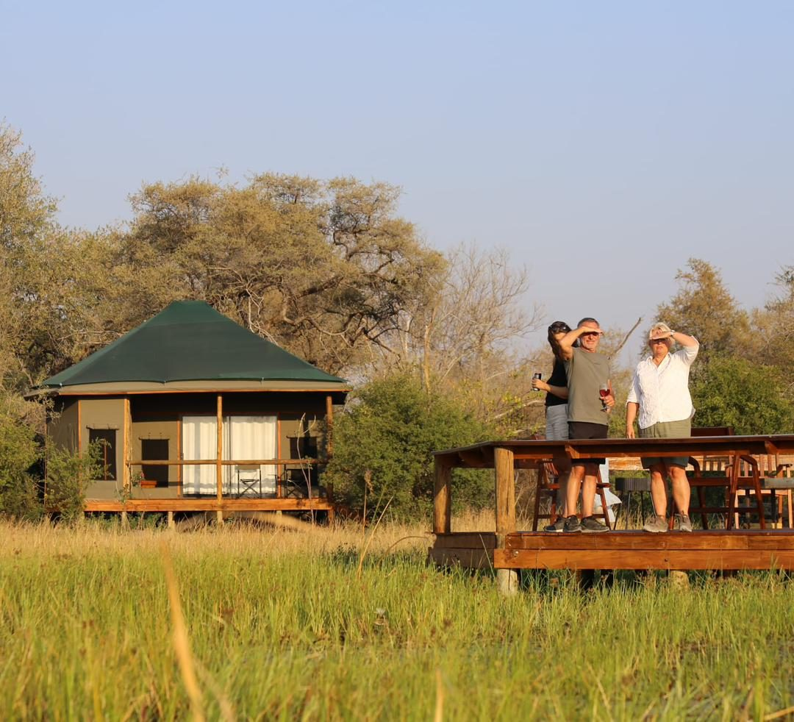
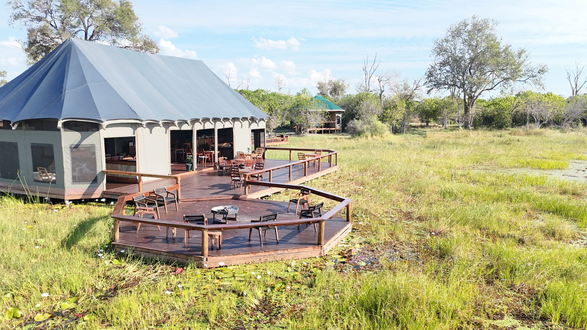

Born from Botswana. Built for the next generation of explorers.
Bosele Graduates Adventures is a Botswana adventure travel brand focused on meaningful safari experiences for graduates, students, groups, private travellers and partners.
Our direction
We believe a safari can be more than a holiday. It can be a milestone, a learning experience, a celebration, a team journey, or the story people remember long after they return home.
Our product direction combines Botswana's wilderness with curated itineraries, dependable logistics, guided activities and flexible formats — from camping to lodge-based travel.
Explore. Discover. Grow.
Bosele is positioned around experiential travel: memorable places, purposeful journeys and service that feels personal.

Built to be recognised.
Bosele is growing beyond trips into a travel identity people can wear, share and remember.

Rooted in Botswana.

A brand travellers can belong to.
OUR STORY
Made by Graduates, for Graduates.
Bosele Graduates Adventures was born from a simple idea: graduating should be more than the end of a chapter — it should be the beginning of a new adventure.
Created with graduates and young travellers in mind, Bosele brings together celebration, exploration, learning and the beauty of Botswana. What began as a graduate travel concept is growing into a broader adventure company serving students, schools, families, private travellers and groups.
From the Okavango Delta and Khwai to Moremi, Chobe and beyond, we aim to make meaningful Botswana travel more accessible while creating journeys that people remember long after they return home.
Learn. Explore. Grow.
Who we serve

Private explorers
Couples, friends, families and individuals looking for curated Botswana adventures.

Graduates & students
Travel experiences that blend adventure, learning, celebration and discovery.

Partners & groups
Travel agencies, institutions and corporate groups needing packaged, market-ready experiences.

Schools & institutions
Educational safari and conservation journeys that move learning beyond the classroom.